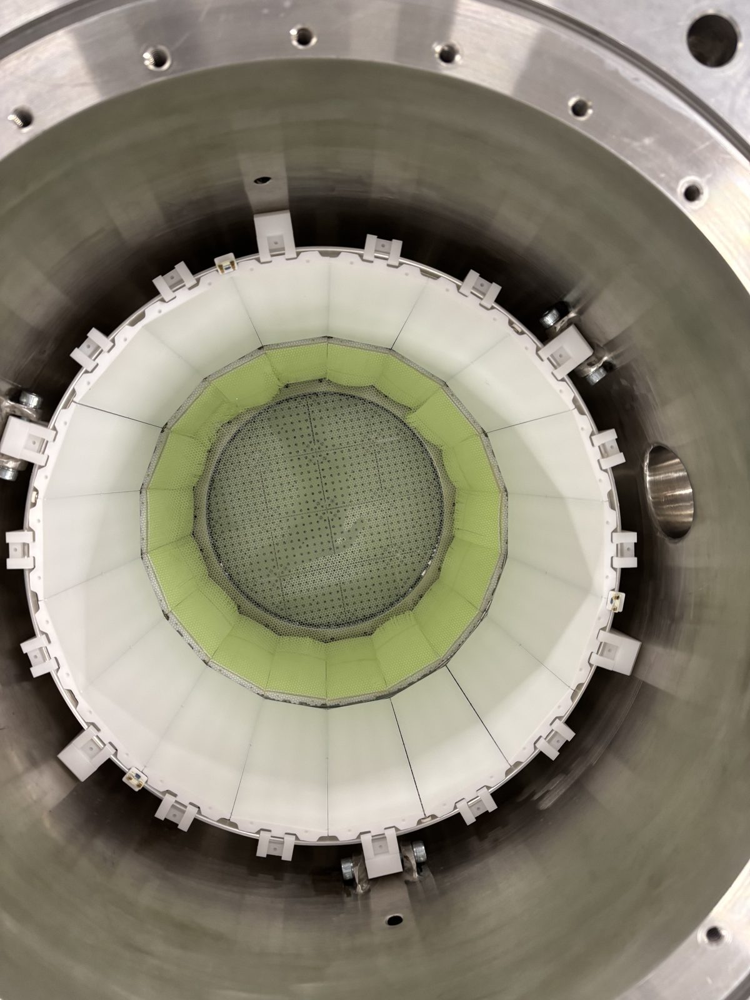
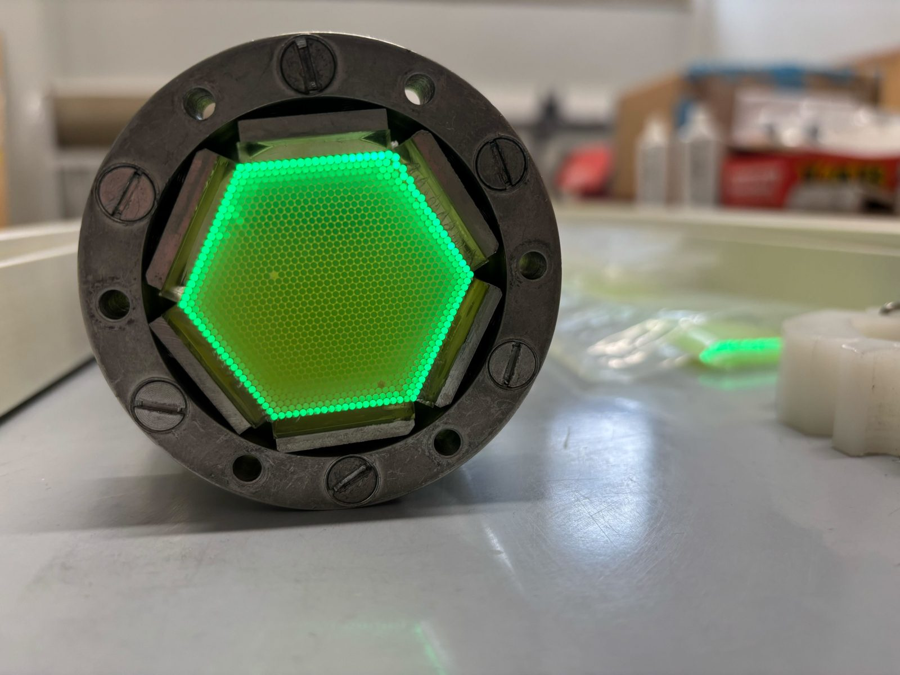
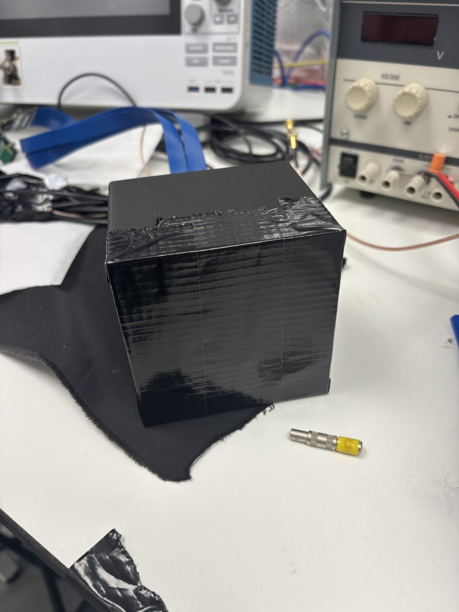

What I Do
I work on the hardware and the simulation side of detector R&D: gluing and evaporating wavelength-shifting fibers, taking data with prototypes, writing calibration software, and building Geant4 simulations to understand what the detectors are seeing.

HD-DEMO
Current prototype: fiber barrel construction, calibration software and simulation.

CIGAR
Fiber assembly, data taking and a full Geant4 simulation.

CsI(Tl) & COCOA
A new scintillator candidate, tested with LiquidO technology.

Simulation
A realistic muon generator and source studies in Geant4.